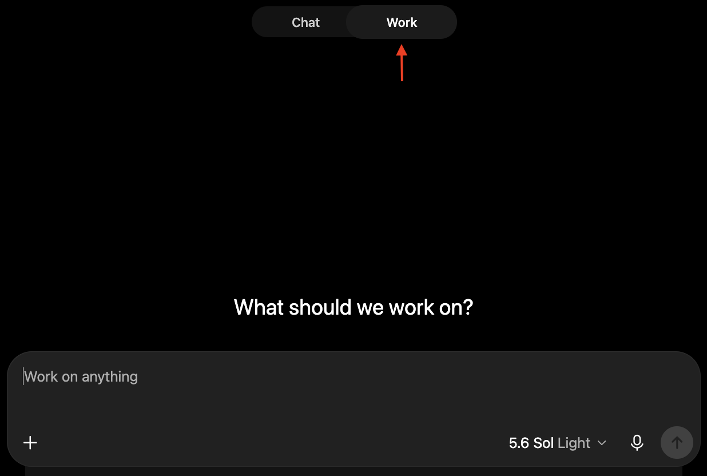

Work
A lot of work can be done in Chat, like making presentations, researching a topic, or even writing up longer documents with sources. But, at some point, a task can be big enough where Chat becomes less suited for the job. Thus, ChatGPT offers an alternate chat option, Work.
Work is the mode for heavier, longer-running jobs; the kind that take many steps and lean on a lot of source material.
Work is where you'd hand off something like “go through these twelve spreadsheets and pull the numbers into one summary” and let it grind.

When you start a new chat, make sure Work is selected.
When to choose Work over Chat
Chat and Work share the same underlying capabilities. The difference is follow-through. Instead of fitting everything into one reply, Work carries out a sequence of steps — e.g. searching sources, reading documents, comparing findings, generating files, and revising them — and keeps going until the task is actually done.
You can even stop a Work response midway to add a requirement or change direction, and it'll continue to work smoothly. This is because Work plans out an overall goal and tackles it step by step. Interrupting just makes it adjust course, keeping whatever earlier work still applies. Chat is less accommodating: it generates one response at a time, and cutting in essentially restarts the work.
Work is more focused on doing a job right rather than just producing a result. ChatGPT is more likely to do extra, optional work of its own volition, like cross-checking figures, flagging inconsistencies, or checking its work. It does things that a quick Chat reply tends to skip unless explicitly requested.
That makes Work the better choice when a task is too big or too involved to really tackle effectively in a Chat.
| Use Chat when… | Use Work when… |
|---|---|
| You mainly want information or conversation. | You mainly want a larger task completed. |
| The task is only a few steps. | The task involves many steps or many files. |
| A good-enough answer will do. | You want a problem tackled thoroughly. |
Work mode was designed for letting ChatGPT do long jobs nearly autonomously. By default, ChatGPT has a strong drive to take a job to completion, unilaterally making possibly significant decisions. It tends to resolve uncertainties on its own by making plausible assumptions, or sometimes just skirting the snag entirely.
This is great if your desired workflow is to give high-level details at the start then let ChatGPT autonomously "one-shot" the result, making all the small decisions.
However, if your work is detail-oriented, handing over all those decisions can produce a polished-looking result that quietly hides its own mistakes. Proofreading can end up costing more effort than working through the task step by step with your own oversight would have.
To avoid that, you can set custom instructions telling ChatGPT to check with you before making significant decisions (you'll have to spell out what counts as significant), or work with it iteratively, tackling small chunks at a time and reviewing each chunk of work as you go.